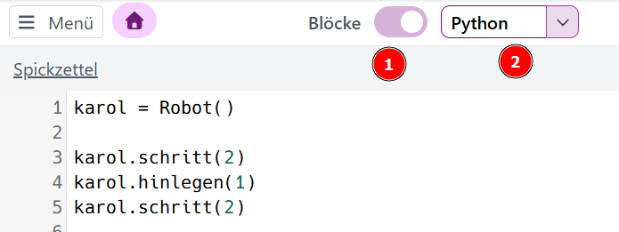

Robot Karol
Anweisung und Sequenz
Öffne diese Seite:
Start
Trage einen beliebigen Namen ein
und löse folgende Aufgaben:
- Start
- Umweltschutz
- Um die Ecke
- Verschieben
Umschalten auf Python

- Schalte die Blockansicht aus.
- Wähle Python als Programmiersprache.
- Untersuche deinen Programmcode in dieser Sprache.
Hefteintrag
Programmieren mit Robot Karol
Ein Computerprogramm besteht aus einer Sequenz von Anweisungen, die nacheinander ausgeführt werden:
1 karol = Robot()
2 karol.schritt(2)
3 karol.hinlegen(1)
Zusatzaufgaben
Erweitere das Programm von oben:
- Karol soll zwei Schritte weitergehen.
- Ein neuer Roboter mit dem Namen kara soll erscheinen.
- Kara soll den Stein aufheben, den Karol gelegt hat.
- Kara soll weitergehen, bis sie rechts neben Karol steht und in die gleiche Richtung schaut wie er.